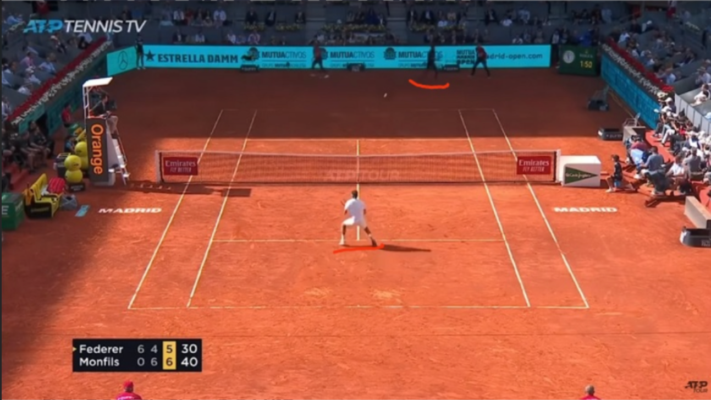
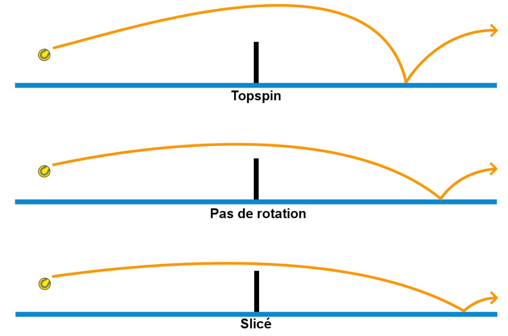

Au tennis on ne fait pas que frapper dans une balle, les placements de ces dernières peuvent varier et ceux des joueurs aussi ; par exemple un service volée sera généralement plus efficace si le joueur tire fort et/ou que son adversaire se situe loin de la ligne de fond de court

Quelque différents types de services

Le terrain influe lui aussi sur les rebonds de la balle, par exemple si vous jouez sur terre battue comme à Roland Garros la balle aura tendance à monter plus haut, cela donne un avantage aux joueurs qui mettent de l'effet topspin (comme Raphael Nadal), mais sur gazon c'est l'inverse qui se produit la balle rebondit plus bas , ça permet de surprendre facilement l'adversaire avec un effet slicé. Les cours sur dur ont un rebond qui se situe entre celui sur terre battue et gazon, mais ils ont surtout la particularité d'être plus rapide que ces derniers ; le tournoi de Shanghai est considéré comme ayant les courts les *plus rapides* de tout le circuit ATP
Le rôle de l'arbitre de chaise
Dans un match de tennis l'arbitre de chaise est "responsable de l'arbitrage", il y a des arbitres de chaises qui signalent les balles en dehors de limites du terrain. Mais il y a aussi un arbitrage vidéo (qui est dans 99% des tournois le hawk-eye) :
les joueurs ont le droit de demander l'arbitrage vidéo deux fois par set, et une 3° fois si il y a un tie-break ; mais ce n'est le cas que dans 3 grands chelems sur 4, puisque le hawk-eye reste encore imprécis sur terre battue.